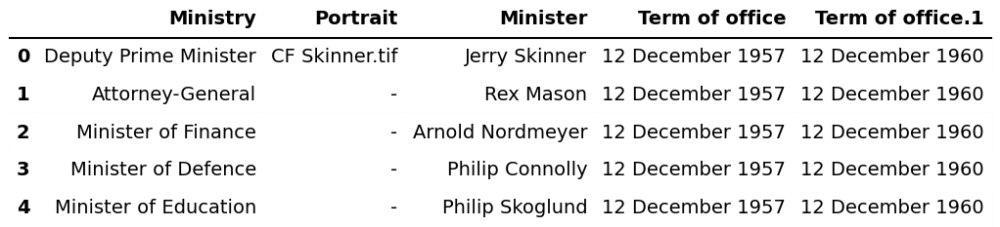
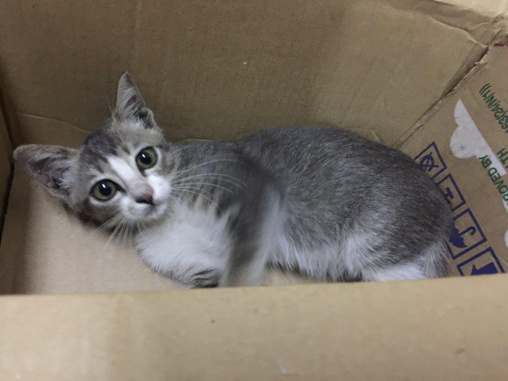

Enhancing Multi-Modal Tabular Understanding via Neuro-Symbolic Reasoning — a code-based framework that lets VLMs write and execute programs to solve table QA and prediction tasks.
TWT uses multi-turn neuro-symbolic reasoning: the model generates code, a sandbox executes it, and the result feeds back into context — looping until the final answer emerges.
A two-stage training recipe — Task-Oriented SFT followed by Adaptive Loss-Scaled GRPO — that teaches VLMs to reason with tables through code.
Given only a table header image and file path, the model writes pandas code in a sandbox to query, aggregate, and reason over the full table.
Combines tabular feature engineering (via code) with ResNet50 image predictions, fusing both modalities for classification and regression tasks.
Supervised fine-tuning with masked code results — the model learns the <analy> / <code> / <answer> protocol without memorizing execution outputs.
Reinforcement learning with multi-turn rollouts. Only successfully executed code contributes to gradient updates, improving code reliability.
All generated code runs in a controlled sandbox with timeout and persistent environment, ensuring safe and reproducible inference.
External tools like ResNet50Predict are injected into the sandbox, letting the model call vision models from generated code seamlessly.
Watch the multi-turn reasoning unfold step by step. Click Play to animate the conversation.


TWT covers two families of Tabular-Vision Multi-Modal Understanding tasks.
| Task Type | Input | Sandbox Requirements | Answer |
|---|---|---|---|
| Table QA | Table header image + question + CSV path | pandas, standard Python | Text / number |
| Table Prediction | Sample image + task desc + CSV & image paths | pandas, sklearn, ResNet50Predict | Class label / regression value |
Task-Oriented SFT teaches the output protocol; Adaptive Loss-Scaled GRPO refines reasoning through RL with multi-turn rollouts.
Supervised fine-tuning on ~1.5K Table QA + 1.2K Table Prediction samples. Code execution results are masked during loss computation to prevent memorization. The model learns the <analy> / <code> / <answer> protocol.
GRPO reinforcement learning with a multi-turn scheduler. The TWT plugin extracts code, executes in sandbox, and appends results to context. Only successfully executed code contributes to gradient updates (adaptive loss scaling).
If you use TWT in your research, please cite our paper.